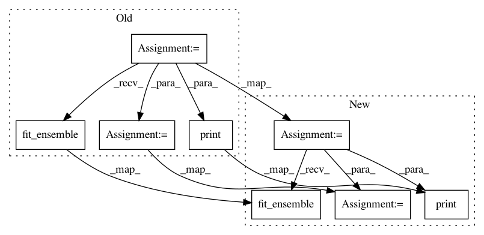

938175ddb4bd062d682c237f0ccc90d68cf410c3,examples/60_search/example_sequential.py,,,#,23
Before Change
// Build and fit the classifier
// ======================================
automl = autosklearn.classification.AutoSklearnClassifier(
time_left_for_this_task=120,
per_run_time_limit=30,
tmp_folder="/tmp/autosklearn_sequential_example_tmp",
output_folder="/tmp/autosklearn_sequential_example_out",
// Do not construct ensembles in parallel to avoid using more than one
// core at a time. The ensemble will be constructed after auto-sklearn
// finished fitting all machine learning models.
ensemble_size=0,
delete_tmp_folder_after_terminate=False,
)
automl.fit(X_train, y_train, dataset_name="breast_cancer")
// This call to fit_ensemble uses all models trained in the previous call
// to fit to build an ensemble which can be used with automl.predict()
automl.fit_ensemble(y_train, ensemble_size=50)
////////////////////////////////////////////////////////////////////////////////////////////////////////////////////////////////////////////////////////
// Print the final ensemble constructed by auto-sklearn
// ====================================================
print(automl.show_models())
////////////////////////////////////////////////////////////////////////////////////////////////////////////////////////////////////////////////////////
// Get the Score of the final ensemble
// ===================================
predictions = automl.predict(X_test)
print(automl.sprint_statistics())
print("Accuracy score", sklearn.metrics.accuracy_score(y_test, predictions))
After Change
// Build and fit the classifier
// ======================================
automl = autosklearn.classification.AutoSklearnClassifier(
time_left_for_this_task=120,
per_run_time_limit=30,
tmp_folder="/tmp/autosklearn_sequential_example_tmp",
output_folder="/tmp/autosklearn_sequential_example_out",
// Do not construct ensembles in parallel to avoid using more than one
// core at a time. The ensemble will be constructed after auto-sklearn
// finished fitting all machine learning models.
ensemble_size=0,
delete_tmp_folder_after_terminate=False,
)
automl.fit(X_train, y_train, dataset_name="breast_cancer")
// This call to fit_ensemble uses all models trained in the previous call
// to fit to build an ensemble which can be used with automl.predict()
automl.fit_ensemble(y_train, ensemble_size=50)
////////////////////////////////////////////////////////////////////////////////////////////////////////////////////////////////////////////////////////
// Print the final ensemble constructed by auto-sklearn
// ====================================================
print(automl.show_models())
////////////////////////////////////////////////////////////////////////////////////////////////////////////////////////////////////////////////////////
// Get the Score of the final ensemble
// ===================================
predictions = automl.predict(X_test)
print(automl.sprint_statistics())
print("Accuracy score", sklearn.metrics.accuracy_score(y_test, predictions))
In pattern: SUPERPATTERN
Frequency: 3
Non-data size: 8
Instances
Project Name: automl/auto-sklearn
Commit Name: 938175ddb4bd062d682c237f0ccc90d68cf410c3
Time: 2020-12-02
Author: feurerm@informatik.uni-freiburg.de
File Name: examples/60_search/example_sequential.py
Class Name:
Method Name:
Project Name: automl/auto-sklearn
Commit Name: 05e7263c6fbfa46e30bb0f4d9fe2389366af940b
Time: 2021-01-18
Author: 44504424+franchuterivera@users.noreply.github.com
File Name: examples/60_search/example_sequential.py
Class Name:
Method Name:
Project Name: automl/auto-sklearn
Commit Name: 8442321b9b7a7cef7e3806b525965c36cea1549e
Time: 2020-09-25
Author: feurerm@informatik.uni-freiburg.de
File Name: examples/60_search/example_parallel_manual_spawning.py
Class Name:
Method Name: